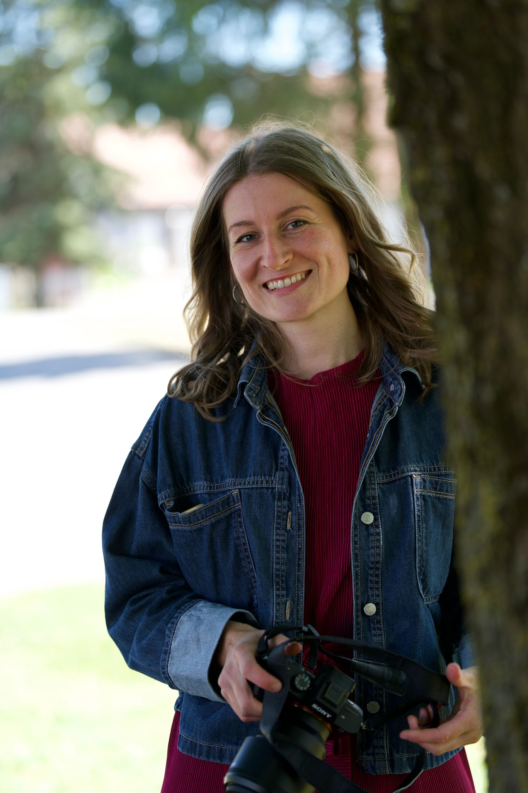
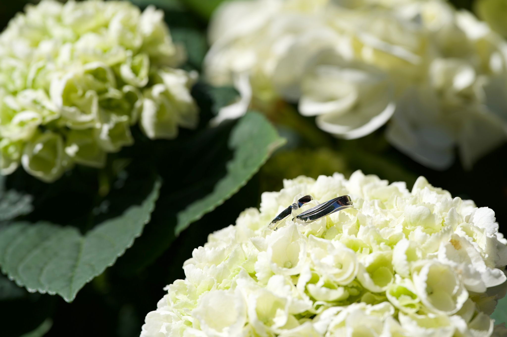

Fotografie
Natürliche, elegante Bilder für Hochzeiten, Paare, Portraits und besondere Ereignisse.
Fotografie & veganes Catering
Ich verbinde emotionale Fotografie mit stilvollem veganem Catering – für Hochzeiten, Feste und besondere Anlässe, die wunderschön aussehen, liebevoll schmecken und sich unvergesslich anfühlen.


Über mich

Ich bin Sabrina Rauch – Fotografin mit einem Blick für echte Emotionen und Gastgeberin mit Liebe zu stilvoller pflanzlicher Kulinarik.
Meine Arbeit vereint Atmosphäre, Ästhetik und Feingefühl. Während ich mit der Kamera Erinnerungen festhalte, sorge ich mit veganem Catering für Genuss, Leichtigkeit und eine besondere Stimmung.
So entsteht ein harmonisches Gesamtbild – visuell, geschmacklich und emotional.
Leistungen
Liebevoll geplant, hochwertig umgesetzt und auf euren Anlass abgestimmt.
Natürliche, elegante Bilder für Hochzeiten, Paare, Portraits und besondere Ereignisse.
Pflanzliche Speisen, feines Fingerfood und liebevoll angerichtete Genussmomente für Feiern, Empfänge und intime Events.
Fotografie und veganes Catering kombiniert – für ein rundes, elegantes Gesamterlebnis.
Fotografie
Ich halte echte Augenblicke fest – natürlich, sanft und zeitlos. Mir geht es nicht um starre Inszenierung, sondern um Emotion, Nähe und die kleinen Details, die eure Geschichte erzählen.
Portfolio ansehen

Veganes Catering
Mein veganes Catering ist fein, modern und liebevoll präsentiert. Ob Hochzeit, Empfang oder private Feier – ich lege Wert auf saisonale Zutaten, schöne Details und eine Atmosphäre, die eure Gäste begeistert.
Catering anfragenGalerie
Fotografie und pflanzliche Kulinarik – vereint in einer sanften, eleganten Bildsprache.


Preisindikation
Die finalen Preise hängen von Gästeanzahl, Ort, Dauer und gewünschtem Umfang ab. Diese Angaben dienen als erste Orientierung.
Paarshootings ab ca. € 250
Hochzeitsreportagen ab ca. € 900
Fingerfood & kleine Buffets ab ca. € 25 pro Person
Individuelle Menüs ab ca. € 45 pro Person
Fotografie & veganes Catering gemeinsam geplant ab ca. € 1.400, je nach Umfang und Gästeanzahl.
Kontakt
Ihr plant eine Hochzeit, ein Fest oder ein besonderes Event? Ich freue mich auf eure Anfrage für Fotografie, veganes Catering oder beides zusammen.
Ersetze DEINE-ID in der Formular-Action durch deine echte Formspree-ID.